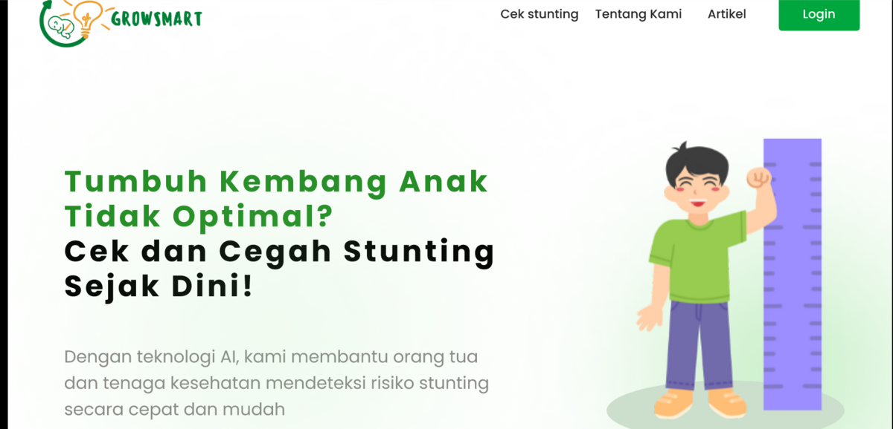
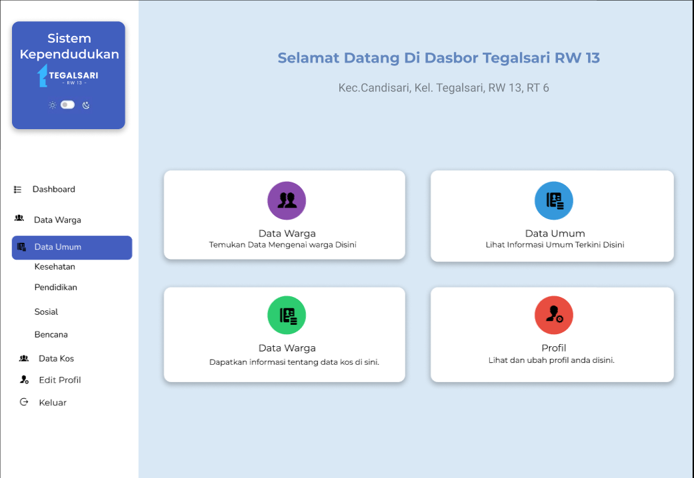
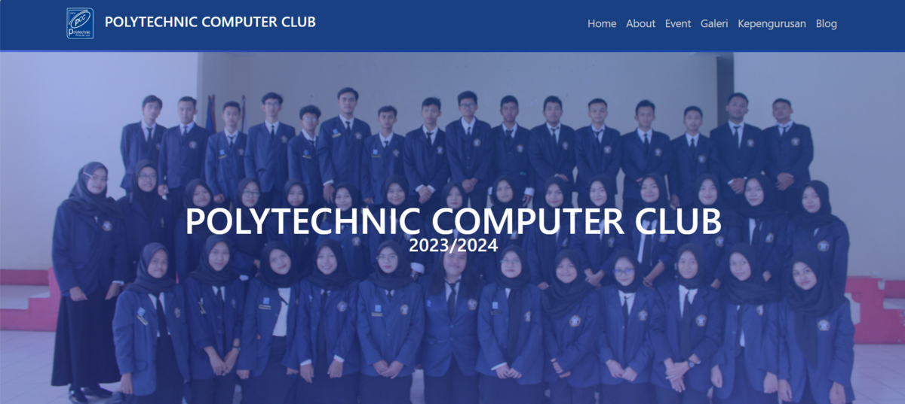

...
[ OK ] Core systems initialized.
Hussain Tamam
Proyek Unggulan
[0x01_Projects]Sistem E-Voting PEMIRA 2024
Sistem backend yang aman dan andal untuk Pemilihan Raya Mahasiswa (PEMIRA) di 5 jurusan Politeknik Negeri Semarang.

IoT: MQTT Inference System
Backend Go untuk streaming data sensor via MQTT, diproses model Python secara real-time, disajikan ke WebSockets.

Prediksi Stunting (ML)
Proyek akhir Coding Camp (DBS x Dicoding). Klasifikasi risiko stunting anak menggunakan Neural Network (TensorFlow).

Sistem Informasi Kependudukan
Platform Laravel untuk manajemen data penduduk di tingkat RT/RW, mencakup fitur CRUD warga dan keluarga.

Website Profil UKM PCC
Pengembangan halaman web statis untuk profil Unit Kegiatan Mahasiswa Polytechnic Computer Club.

Odoo Custom Modules
Kumpulan pengembangan dan modifikasi modul Odoo ERP tingkat lanjut untuk mengotomatisasi proses bisnis.
Technical Stack
[0x02_Stack]Backend & API
Pengembangan server-side yang andal dan struktur database relasional maupun NoSQL.
Machine Learning
Klasifikasi, regresi, dan pemrosesan data dengan TensorFlow & Scikit-learn.
Tools & Environment
Git, Linux, Docker, dan deployment ke server/cloud.